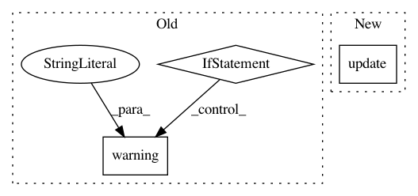

52c94b7ee970da69721ca64f291e38556310482e,rllib/agents/sac/sac_tf_policy.py,,build_sac_model,#Any#Any#Any#Any#,41
Before Change
else:
num_outputs = 0
// No state preprocessor: fcnet_hiddens should be empty.
if config["model"]["fcnet_hiddens"]:
logger.warning(
"When not using a state-preprocessor with SAC, `fcnet_hiddens`"
" will be set to an empty list! Any hidden layer sizes are "
"defined via `policy_model.fcnet_hiddens` and "
"`Q_model.fcnet_hiddens`.")
config["model"]["fcnet_hiddens"] = []
// Force-ignore any additionally provided hidden layer sizes.
// Everything should be configured using SAC"s "Q_model" and "policy_model"
// settings.
model = ModelCatalog.get_model_v2(
obs_space=obs_space,
action_space=action_space,
num_outputs=num_outputs,
After Change
// Everything should be configured using SAC"s "Q_model" and "policy_model"
// settings.
policy_model_config = MODEL_DEFAULTS.copy()
policy_model_config.update(config["policy_model"])
q_model_config = MODEL_DEFAULTS.copy()
q_model_config.update(config["Q_model"])
default_model_cls = SACTorchModel if config["framework"] == "torch" \
In pattern: SUPERPATTERN
Frequency: 3
Non-data size: 3
Instances
Project Name: ray-project/ray
Commit Name: 52c94b7ee970da69721ca64f291e38556310482e
Time: 2021-02-02
Author: sven@anyscale.io
File Name: rllib/agents/sac/sac_tf_policy.py
Class Name:
Method Name: build_sac_model
Project Name: home-assistant/home-assistant
Commit Name: fa6e93f0c7e78a3f83bf48ed12f8902dba90c5a0
Time: 2017-06-27
Author: mail@fabian-affolter.ch
File Name: homeassistant/components/sensor/glances.py
Class Name:
Method Name: setup_platform
Project Name: dmlc/gluon-nlp
Commit Name: f4275c0b80197e0f1bbd3a2a1a31cf07d85013b1
Time: 2019-01-09
Author: leonard@lausen.nl
File Name: scripts/word_embeddings/evaluate_pretrained.py
Class Name:
Method Name: